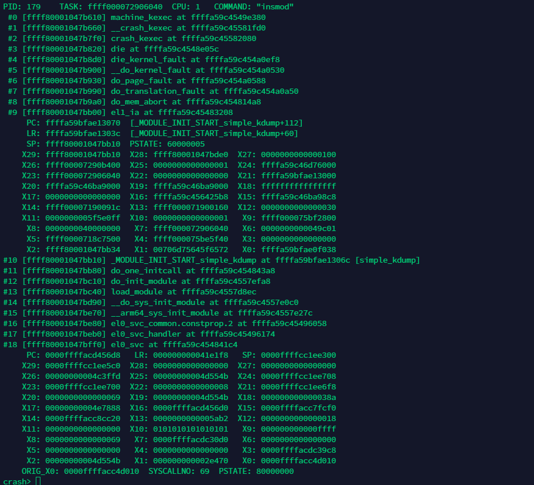

12.3. arm64栈布局及函数调用栈恢复方法
12.3.1. 栈布局
在ARM64架构中，栈从高地址向低地址生长，栈的起始地址称为栈底，栈从高地址往低地址延伸到某个地址，这个地址称为栈顶。
栈在函数调用过程中起到非常重要的作用，包括存储函数使用的局部变量、传递参数等。在函数调用过程中，栈是逐步生成的。为单个函数分配的栈空间， 称为栈帧(stack frame).
假设函数调用关系是main()—->func_1()—->func_2(). 则栈布局如下所示
ARM64架构的函数栈布局关键点如下
所有的函数调用栈都会组成一个单链表
每个栈由两个地址来构成这个链表，这两个地址都是64位宽的，并且他们都位于栈的底部
低地址存放: 指向上一个栈帧(父函数的栈帧)的栈基地址FP,类似于链表的prev指针
高地址存放: 当前函数的返回地址，也就是进入该函数时LR的值
处理器的FP和SP寄存器相同，在函数执行时FP和SP寄存器会指向该函数栈空间的FP处，即栈底
函数返回时，ARM64处理器先把栈中的P_LR的值载入当前LR寄存器，然后再执行ret指令
备注
arm64中LR保存的是函数返回地址，也就是函数返回后执行的下一条指令地址
12.3.2. 恢复函数调用栈
根据子函数栈的FP可以找到父函数栈的FP(栈基地址),也就是找到父函数的栈帧。这样可以通过FP层层回溯，找到所有函数的调用路径
FP_f = *(FP_c)
FP_f: 指的是父函数栈空间的FP
FP_c: 指的是子函数栈空间的FP
根据本函数栈帧里保存的LR可以间接获取父函数调用子函数时的PC值，从而根据符号表得到具体的函数名。在调用子函数时，LR就指向子函数返回的 下一条指令，通过LR指向的地址再减去4字节偏移量就得到了本函数的入口地址。
PC_f = *LR_c - 4 = *(FP_c + 8) - 4
实例
下图是一个内核奔溃时的寄存器现场

第一步：求解函数栈空间的FP
从发生系统奔溃的现场和寄存器x29可知，发生崩溃时函数栈空间的FP为ffff80001047bb10，更具公式一可以得到上一级函数栈空间的FP
crash> rd ffff80001047bb10
ffff80001047bb10: ffff80001047bb80 ..G.....
重复操作可以得到上一级的FP
crash> rd ffff80001047bb80
ffff80001047bb80: ffff80001047bc10 ..G.....
第二步: 需要找到每个函数的名称
首先通过寄存器现场来反推出它的父函数名称，发生crash时函数栈空间的FP存放在ffff80001047bb10地址处，那么LR在其高8字节的地址上。 因此LR存放在ffff80001047bb18地址上。由于LR存放了返回的下一条指令，因此再减去4字节，就是父函数调用该函数时PC值
crash> rd ffff80001047bb18
ffff80001047bb18: ffffa59c454843ac .CHE....
crash> dis ffffa59c454843a8
0xffffa59c454843a8 <do_one_initcall+88>: blr x21
因此就到了父函数的名称: do_one_initcall, 它在0xffffa59c454843a8地址处使用blr指令来调用_MODULE_INIT_START_simple_kdump函数
do_one_initcall的函数栈FP存储在ffff80001047bc10处，因此LR存放在ffff80001047bc18处
crash> rd ffff80001047bc18
ffff80001047bc18: ffffa59c4557d8f0 ..WE....
crash> dis ffffa59c4557d8ec
0xffffa59c4557d8ec <load_module+7204>: bl 0xffffa59c4557ef58
所以do_one_initcall的父函数就是load_module